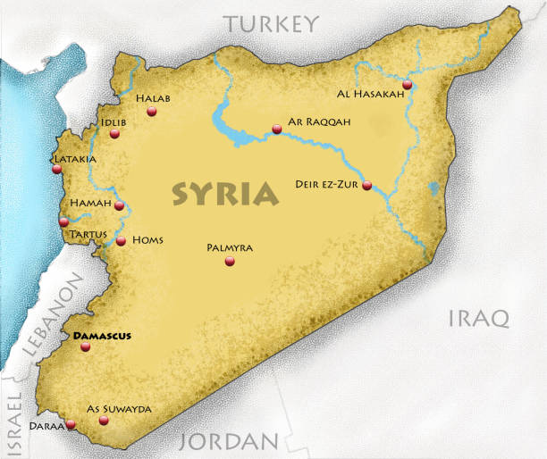

General Information about Syria
Syria is known for its rich history and vibrant culture. From the ancient city of Palmyra to the bustling streets of Damascus, Syria has long been a cultural and historical hub in the Middle East.
- Syria is home to some of the world’s oldest cities.
- The country boasts ancient monuments, UNESCO sites, and rich traditions.
- Syria is known for its warm hospitality and strong sense of community.
Despite facing many challenges, Syria remains a symbol of resilience and strength for its people.
Syria's Achievements and Contributions
The Syrian people have made countless contributions to human civilization, spanning millennia. These achievements span a wide range of fields, including history, culture, science, architecture, and literature.
Historical and Cultural Contributions
- Ancient Civilizations: Syria is home to some of the earliest human settlements, with cities like Ebla, Mari, and Ugarit being centers of trade, culture, and learning.
- Invention of the Alphabet: The Ugaritic alphabet, discovered in modern-day Syria, is one of the earliest forms of written language, influencing many subsequent alphabet systems.
- Palmyra: The ancient city of Palmyra, a UNESCO World Heritage site, was a crossroads of culture and commerce in the ancient world. Its monumental ruins are a testament to Syria's historical significance.
- Syrian Cuisine: Syrian cuisine has influenced much of the Middle East, with dishes such as hummus, falafel, and kibbeh gaining global popularity.
Scientific and Intellectual Achievements
- Mathematics and Astronomy: Syrian scholars have contributed to mathematics and astronomy. Notably, the Syrian astronomer Ibn al-Shatir, who worked in the 14th century, is credited with helping to reform the astronomical models that laid the foundation for modern science.
- Arabic Literature: Syria has produced some of the most important poets, writers, and intellectuals in the Arab world, including Nizar Qabbani, one of the most famous poets of the 20th century.
Modern Achievements
- Resilience During Adversity: The Syrian people have shown immense resilience during difficult times, particularly during the ongoing civil war. Despite hardships, Syrians continue to rebuild their lives and communities.
- Refugee Support: Syrians who have fled the country have made significant contributions in their new communities, contributing to the culture, economy, and society of the countries where they have found refuge.
Through war, displacement, and adversity, the spirit of the Syrian people remains unbroken. They continue to hold on to their rich cultural heritage, sharing it with the world and contributing to the global community.
Contact Us
And now for a joke:
Why don’t eggs tell jokes?
Because they might crack up!